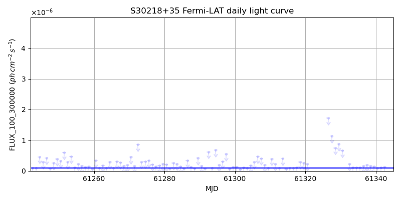
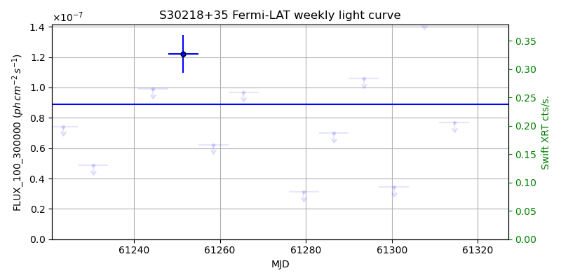
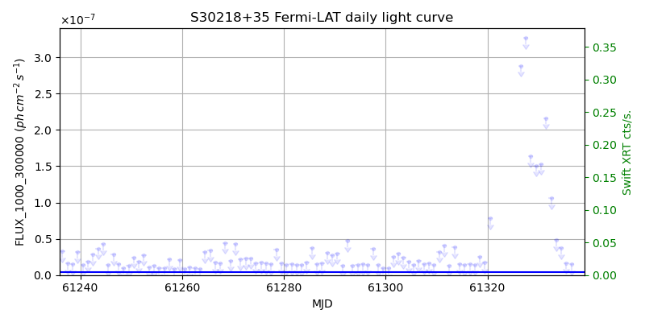
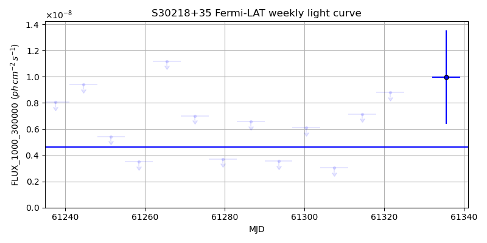

LAT Lightcurve site: https://fermi.gsfc.nasa.gov/ssc/data/access/lat/msl_lc/source/S3_0218p35
Swift site: https://www.swift.psu.edu/monitoring/source.php?source=S30218+35
NED: Query
Time of last update of this page: UT: 2026-10-24 15:12 (MJD: 61337.634)
| Property | Value |
|---|---|
| R.A. | 2:21:05.52 |
| Dec. | 35:56:13.2 |
| z | 0.944 |
| 3FGL SpectrumType | PowerLaw |
| 3FGL PL Index | 2.28 |
| 3FGL Flux_100_300000 | 8.90e-08 1 / (s cm2) |
| 3FGL Flux_1000_300000 | 4.65e-09 1 / (s cm2) |
| 3FGL Flux >200 GeV | 5.21e-12 1 / (s cm2) |
| 3FGL Extrap. Crab >200 GeV | 0.02 |
| 3FGL Flux After EBL Absorption >200GeV | 9.60e-14 1 / (s cm2) |
| 3FGL EBL Crab Fraction >200GeV | 0.00 |

| MJD | dMJD | Flux | dFlux | Frac3FGL | FracCrab>200GeV | EBLFracCrab>200GeV |
|---|---|---|---|---|---|---|
| 61332.50 | 0.50 | 2.17e-07 | 0.00e+00 | 0.00 | 0.00 | 0.00 |
| 61333.50 | 0.50 | 1.07e-07 | 0.00e+00 | 0.00 | 0.00 | 0.00 |
| 61334.50 | 0.50 | 1.09e-07 | 0.00e+00 | 0.00 | 0.00 | 0.00 |
| 61335.50 | 0.50 | 1.09e-07 | 0.00e+00 | 0.00 | 0.00 | 0.00 |
| 61336.50 | 0.50 | 1.64e-07 | 0.00e+00 | 0.00 | 0.00 | 0.00 |

| MJD | dMJD | Flux | dFlux | Frac3FGL | FracCrab>200GeV | EBLFracCrab>200GeV |
|---|---|---|---|---|---|---|
| 61300.50 | 3.50 | 3.45e-08 | 0.00e+00 | 0.00 | 0.00 | 0.00 |
| 61307.50 | 3.50 | 1.45e-07 | 0.00e+00 | 0.00 | 0.00 | 0.00 |
| 61314.50 | 3.50 | 7.67e-08 | 0.00e+00 | 0.00 | 0.00 | 0.00 |
| 61321.50 | 3.50 | 1.67e-07 | 0.00e+00 | 0.00 | 0.00 | 0.00 |
| 61328.50 | 3.50 | 3.20e-07 | 0.00e+00 | 0.00 | 0.00 | 0.00 |

| MJD | dMJD | Flux | dFlux | Frac3FGL | FracCrab>200GeV | EBLFracCrab>200GeV |
|---|---|---|---|---|---|---|
| 61332.50 | 0.50 | 1.06e-07 | 0.00e+00 | 0.00 | 0.00 | 0.00 |
| 61333.50 | 0.50 | 4.80e-08 | 0.00e+00 | 0.00 | 0.00 | 0.00 |
| 61334.50 | 0.50 | 3.71e-08 | 0.00e+00 | 0.00 | 0.00 | 0.00 |
| 61335.50 | 0.50 | 1.68e-08 | 0.00e+00 | 0.00 | 0.00 | 0.00 |
| 61336.50 | 0.50 | 1.52e-08 | 0.00e+00 | 0.00 | 0.00 | 0.00 |

| MJD | dMJD | Flux | dFlux | Frac3FGL | FracCrab>200GeV | EBLFracCrab>200GeV |
|---|---|---|---|---|---|---|
| 61300.50 | 3.50 | 6.11e-09 | 0.00e+00 | 0.00 | 0.00 | 0.00 |
| 61307.50 | 3.50 | 3.03e-09 | 0.00e+00 | 0.00 | 0.00 | 0.00 |
| 61314.50 | 3.50 | 7.15e-09 | 0.00e+00 | 0.00 | 0.00 | 0.00 |
| 61321.50 | 3.50 | 8.81e-09 | 0.00e+00 | 0.00 | 0.00 | 0.00 |
| 61328.50 | 3.50 | 3.08e-08 | 0.00e+00 | 0.00 | 0.00 | 0.00 |
--------------------------------------------------------- Using user-supplied coords: 2:21:05.52 35:56:13.2 2000 --------------------------------------------------------- FLWO UT night of: 2026-10-25 Local Sid. @ Midnight: 01:50 Sunset (-15.0) (local, UT): 18:49 01:49 Sunrise (-15.0) (local, UT): 05:27 12:27 Moonrise (local, UT): Moonset (local, UT): Moon phase: 0.99 --------------------------------------------------------- AzTime LSID UT Obj_el Obj_az Mn_el Mn_az Sep. --------------------------------------------------------- 18:49 20:39 01:49 21.1 59.7 26.2 94.5 32.2 19:19 21:09 02:19 26.7 62.3 32.4 98.6 32.0 19:49 21:39 02:49 32.4 64.7 38.6 103.2 31.7 20:19 22:09 03:19 38.2 66.8 44.7 108.4 31.5 20:49 22:39 03:49 44.1 68.6 50.6 114.6 31.3 21:19 23:09 04:19 50.1 70.1 56.2 122.3 31.1 21:49 23:39 04:49 56.2 71.2 61.2 132.2 30.9 22:19 00:09 05:19 62.2 71.8 65.5 145.3 30.7 22:49 00:39 05:49 68.3 71.3 68.4 162.2 30.5 23:19 01:10 06:19 74.3 68.8 69.4 182.2 30.3 23:49 01:40 06:49 80.1 60.7 68.2 202.0 30.1 00:19 02:10 07:19 84.9 29.8 65.1 218.6 29.9 00:49 02:40 07:49 84.3 321.5 60.8 231.3 29.7 01:19 03:10 08:19 79.2 297.2 55.7 240.9 29.5 01:49 03:40 08:49 73.3 290.5 50.1 248.5 29.4 02:19 04:10 09:19 67.3 288.5 44.3 254.6 29.2 02:49 04:40 09:49 61.2 288.3 38.2 259.8 29.0 03:19 05:10 10:19 55.1 288.9 32.1 264.4 28.8 03:49 05:40 10:49 49.1 290.1 26.0 268.5 28.6 04:19 06:10 11:19 43.1 291.7 19.9 272.4 28.4 04:49 06:40 11:49 37.2 293.6 13.8 276.2 28.2 05:19 07:11 12:19 31.4 295.7 7.8 279.9 27.9 05:27 07:18 12:27 29.9 296.3 6.2 280.9 27.9 --------------------------------------------------------- Moon up all night, no dark time. Dark hours >55 deg.: 0.00